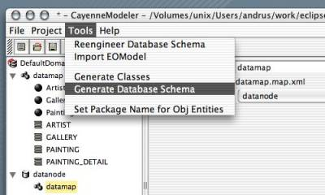
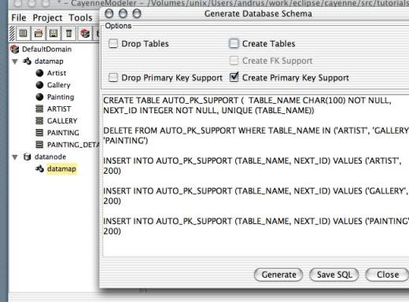

|
LOCAL DOCS
ONLINE RESOURCES |
| 4. Common Modeling Tasks
4.6 Generate Primary Key Support One of Cayenne core features is automatic generation of the database primary keys for the new objects. This requires a set of special database objects to be present in the database. Those are adapter-specific and can be special lookup tables, stored procedures, sequences, etc. If the database schema was generated by CayenneModeler as described in previous chapters, chances are that all needed database objects were already created. Otherwise, if there was an existing schema, these objects must be generated by an application programmer or a DBA using CayenneModeler, or SQL scripts created by CayenneModeler. Prerequisites. Start CayenneModeler and create a new project or open an existing one. Create DataNode with the target database connection info. Create Primary Key Support. Select a DataMap (preferrably under an already configured DataNode), and choose "Tools -> Generate Database Schema" from the menu: When a login panel pops up, enter database information. If the DataMap was selected under a DataNode, then all the login information from this DataNode should already be entered. When a schema generation panel pops up, leave only "Drop Primary Key Support" (optionally) and "Create Primary Key Support" choices checked: Now, if you have enough database privileges to execute listed queries, click on "Generate" button, otherwise click on "Save SQL" button to store the queries, and let the authorized DBA to run these statements. |
| Copyright ©2001-2004 ObjectStyle Group |